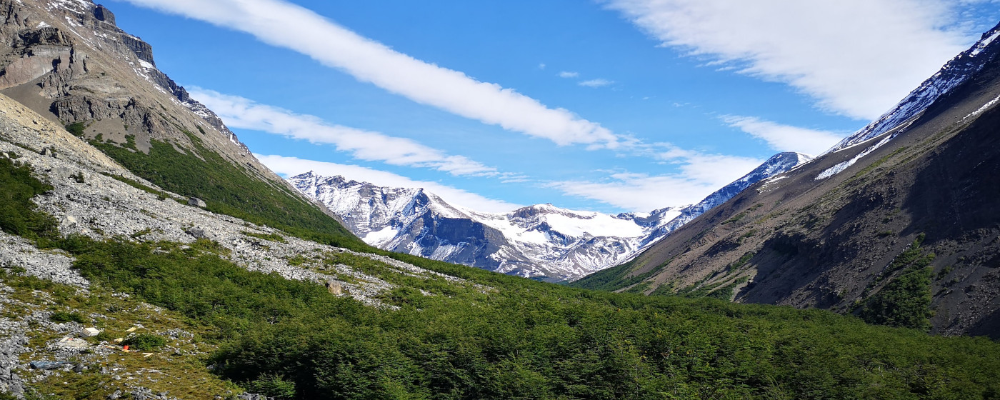
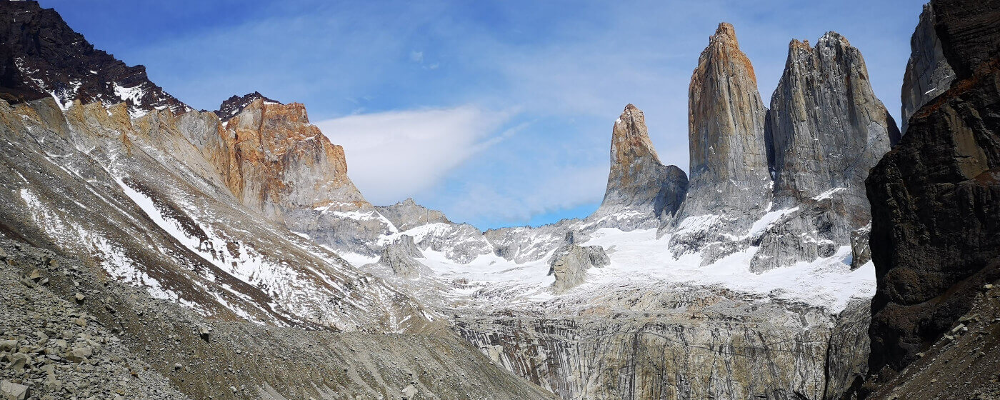
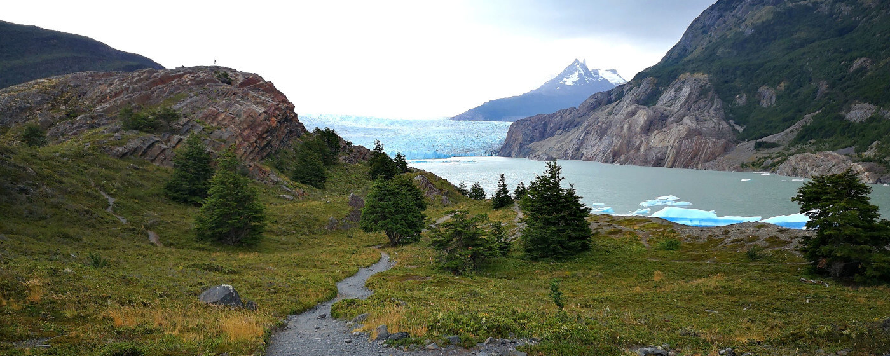
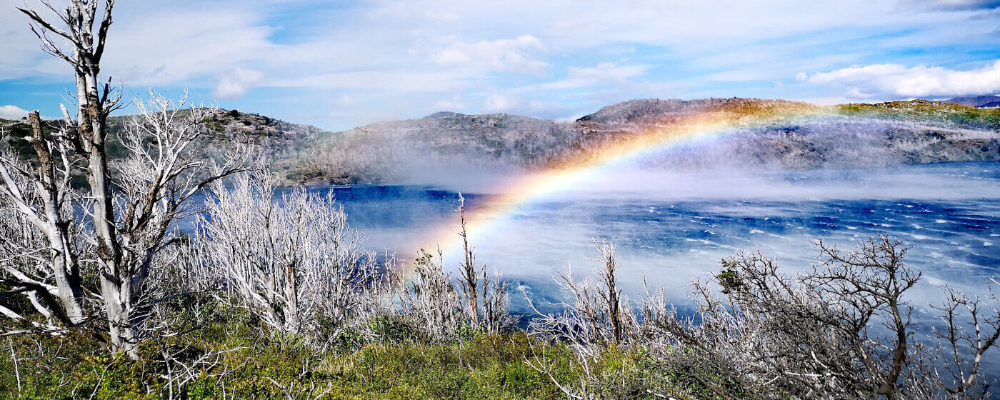
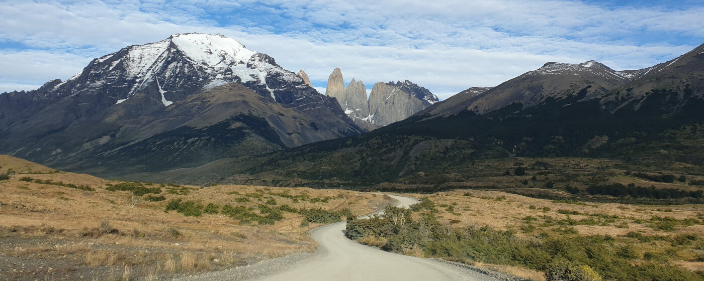
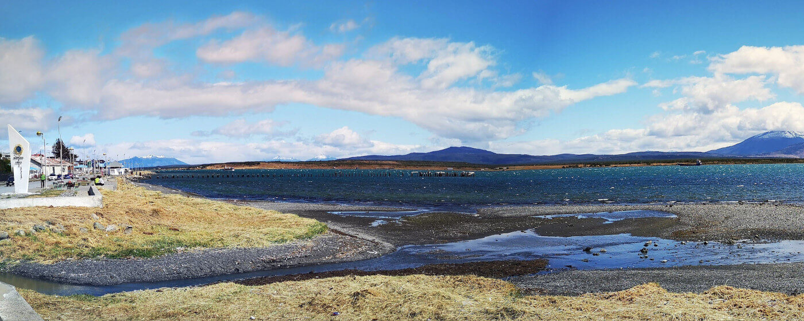
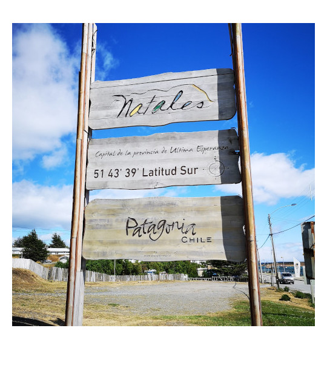
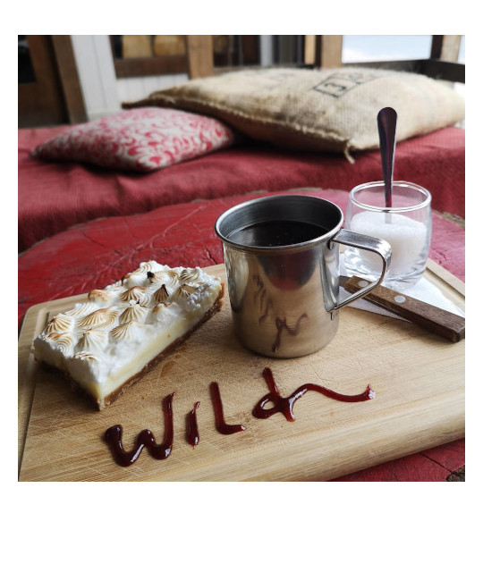

Zu einer der Top drei Wanderlocations in Südamerika - Torres del Paine und Puerto Natales -
Googelt man Wandern und Südamerika ist der zweite Vorschlag nach dem Machu Picchu der „Torres del Paine“-Nationalpark in Chile. Und das hat seinen Grund: Eine Komposition von Bergen, Gletschern, Lagunen und Felsmassiven innerhalb eines Nationalparks erwartet dich dort.
Innerhalb von vier Tagen kann man sich dieses Naturwunder mit allen seinen Facetten erwandern. Allerdings ist man auf Grund dieser Schönheit und des guten Marketings des Parks auch nicht allein dort, sodass das Wandern manchmal zu einer Art Massenpilgerung wird.

ToDo
1. „Torres del Paine“-Nationalpark besuchen
Es gibt unterschiedliche Möglichkeiten den „Torres del Paine“-Park zu besuchen. Für die wanderscheuen Menschen unter euch gibt es organisierte Tagestour bei denen man primär Aussichtspunkte anfährt. Für die Wanderer unter gibt es eine Vielzahl von Aktivitäten im Nationalpark. Die Möglichkeiten reichen von der Tageswanderung zu den Torres, über die viertägige “W“- Wanderung, bis hin zur acht tägigen “O“-Wanderung. Ein Besuch des „Torres del Paine“-Nationalparks ist auf jeden Fall Pflicht, wenn man schon um die halbe Welt bis nach Patagonien geflogen ist.
Der Eintritt für den Nationalpark kostet 21.000 CLP (Stand Januar 2020). Alle Zeltplätze im Park müssen zuvor reserviert werden. Teilweise werden Reservierungsbestätigungen der Zeltplätze beim Parkeingang überprüft, sollte man mehrere Tage im Park verbleiben wollen.
♦ ♦ ♦
Option A: Eine Tageswanderung zu den Torres
Distanz: 22 km - Dauer: 8 bis 9 Stunden - Schwierigkeitslevel: Mittelschwer*
Die Wanderung zu den Torres ist eine 22 km Wanderung und gerade der letzte Kilometer zum Ziel, die Überquerung eines Geröllfeldes, ist eine Herausforderung. Als Dank für diese Qualen erhält man den Blick auf eine unglaubliche Felsformation. Die Wanderung an sich ist sehr schön, allerdings stark überlaufen, sodass man alle paar Minuten andere Wanderer kreuzt.
Der Torres del Paine Nationalpark ist noch ungefähr zwei Stunden mit dem Bus von Puerto Natales entfernt. Es gibt folgende Busanbieter mit unterschiedlichen Abfahrtszeiten: Buses Maria Jose**, Buses Gomez** und Bus Sur**. Alle Busse fahren vom Busbahnhof ab. Für die beschriebene Wanderung muss man den Park über den Eingang Laguna Amarga betreten, dort den Eintritt bezahlen und noch ein zwanzig minütiges Shuttle bis zum Startpunkt der Wanderung am Campingplatz Central nehmen. Die Wanderung selbst ist komplett mit Wegweisern und Markierungen ausgeschildert.
♦ ♦ ♦

Option B: Organisierter Tagestrip mit einem Bus und nur Miniwanderungen
Schwierigkeitslevel: Einfach bis Mittel *
Es gibt zahlreiche Tourenanbieter für Tagestouren zum „Torres del Paine“-Nationalpark. Ein Tourenanbieter mit guten Bewertungen ist chile-outdoor.cl**, der damit wirbt, dass die Guides die Tour auf Spanisch und Englisch anbieten. Besonders interessant ist die Tour: FULL DAY ACTIVO TOUR**. In dieser sieht man viele Bereiche des Parks und verbindet es mit kurzen Wanderungen, sodass man in das komplette Berggefühl kommt.
♦ ♦ ♦
Option C: Die „W“- Wanderung
Distanz: 80km - Dauer: 3 bis 4 Tage - Schwierigkeitsgrad: Mittelschwer*
Das „W“ ist eine Wanderung von drei bis vier Tagen, die von den meisten Wanderern gemacht wird, da sich diese in eine Patagonienreise gut eingliedern lässt. Auf dieser Route sieht man die Hauptattraktionen des Parks wie den Grey Gletscher, das Britannico Valley und natürlich die Torres. Die Wanderungen sind wunderschön, jedoch manchmal sehr überlaufen.
Es gibt zwei Möglichkeiten die Wanderung zu starten: Man kann am Campingplatz „Paine Grande“ starten und zuerst in Richtung Grey Gletscher aufbrechen oder am Campingplatz Central und mit der Torreswanderung beginnen. Ich beschreibe euch hier die Möglichkeit mit dem Startpunkt „Paine Grande“, sodass man die Torreswanderung am Ende als Highlight hat. Eine Übersichtskarte aller Wanderungen gibt es hier.
Tag 1: Wanderung zum Grey Gletscher
Distanz: 22 km - Dauer: circa 7 Stunden - Übernachtung: Paine Grande Campingplatz
Der Nationalpark an sich ist zwei Stunden mit dem Bus von Puerto Natales entfernt. Es gibt folgende Busanbieter mit unterschiedlichen Abfahrtszeiten: Buses Maria Jose**, Buses Gomez**, Bus Sur**. Alle Busse fahren vom Busbahnhof ab. Um die Wanderung an diesem Tag zu starten, muss man den Park über den Eingang Pudeto betreten und von dort mit einem Catamaran zum Campingplatz Paine Grande übersetzen. Der Catamaran kostet für eine einfache Überfahrt 23.000 CLP und fährt um 9 und 11 Uhr (Übersicht: Abfahrtszeiten). Wenn man den Transport von Bus Sur nutzt, kann man die Fähre um 9 Uhr erreichen. Die Überfahrt dauert ungefähr 45 Minuten.
Die erste Nacht empfiehlt sich auf dem Campingplatz Paine Grande zu verbringen. Der Vorteil dessen ist, dass man mit weniger Gepäck am ersten Tag wandern kann. Am Zeltplatz angekommen, baust du dein Zelt auf und startest im Anschluss die erste Wanderung zum Grey Gletscher. Die Wanderungen sind alle vor Ort ausgeschildert. Spätestens um 16 Uhr muss man sich auf den Rückweg von Grey Gletscher zum Zeltplatz Paine Grande machen.
Der Zeltplatz Paine Grande hat eine Hütte zum kochen und sitzen, sowie Sanitäranlagen. Alle Kochutensilien müssen selbst mitgebracht werden. Das Laden von Handys ist in der Schutzhütte kostenfrei möglich.
Tag 2: Wanderung zum Británico Viewpoint
Distanz: 18,5 km - Dauer: circa 8,5 Stunden - Übernachtung: Italiano Campingplatz
An diesem Tag sollte man früh starten, da zusätzlich zur Entfernung viele Höhenmeter überwunden werden müssen. Die Wanderung führt entlang des Lago Sköttsberg. Nach ungefähr zweieinhalb Stunden erreicht man den Zeltplatz Italiano, sodass man dort sein Zelt aufbauen und die restliche Wanderung mit wenig Gepäck absolvieren kann. Man lasse den Zeltplatz hinter sich und nach ungefähr drei Stunden erreicht man den Británico Viewpoint, welcher einen den Blick auf ein Tal mit umliegenden, zum teils schneebedeckten, Bergen liefert.
Tag 3: Wanderung entlang des Sees
Distanz: 21,6 km - Dauer: circa 9 Stunden - Übernachtung: Chileno Campingplatz
Die Wanderung an diesem Tag ist lang, jedoch handelt es sich eher um ein Verbindungsstück. Trotzdem ist es eine schöne Wanderstrecke mit schöner Landschaft entlang des Sees Nordernskjöld. Wenn man am Campingplatz Chileno ankommt, hat man das erste Stück des Aufstiegs zu den Torres bereits hinter sich gebracht.
Tag 4: Wanderung zu den Torres
Distanz: 13,8 km - Dauer: circa 7 Stunden
Am letzten Tag der Wanderung gibt es dann das Highlight der Tour: Die Torres, eine atemberaubende Felsformation. Der Vorteil der Übernachtung auf dem Campingplatz Chileno ist, dass man schon vor den Menschenmassen, die eine Tagestour zu den Torres machen, an den Torres sein kann. Somit lohnt es sich die Wanderung früh zu beginnen und mit ein wenig Glück teilt man sich die Torres mit nicht allzu vielen Menschen. Der letzte Kilometer, bevor man die Laguna Torres erreicht, geht über ein steiles Geröllfeld. Im Anschluss wandert man den gekommenden Weg zurück bis man am Endpunkt der Wanderung am Campingplatz Central ankommt.
Nach diesem Wandertag nehme einen Bus zurück nach Puerto Natales.
♦ ♦ ♦
Option D: Die „O“-Wanderung
Distanz: 117 km - Höhenmeter: 4.264 m - Dauer: 8 - 10 Tage - Schwierigkeitsgrad: Schwer*
Wer den Torres del Paine Nationalpark voller Einsamkeit und für sich erleben möchte, sollte die „O“-Wanderung machen. Es handelt sich um eine acht- bis zehntägige Tour bei der man das Bergmassiv komplett umrundet. Die Wanderungen im hinteren Teil sind etwas anspruchsvoller, die Zeltplätze einfacher ausgelegt, aber dafür wird man mit einem wundervollen Wandererlebnis belohnt und eine atemberaubende Aussicht auf ein Eisfeld.
Die Wanderung darf nur gegen den Uhrzeigersinn gelaufen werden. Alle Campingplätze müssen zuvor gebucht sein und man muss seine komplette Ausrüstung von Zelt über ausreichend Nahrung selbst mitnehmen. Starten kann man am Paine Grande Zeltplatz (Nachteil: man muss zweimal den Katamaran bezahlen) oder am Zeltplatz Central. Man sollte diese Tour ausreichend vorbereiten, da man in die Wildnis geht.
Eine gute Informationsseite ist von worldinsteps, wo du die wichtigsten Informationen die Planung der Tour findest.
♦ ♦ ♦
Option E: Weitere kurze Wanderungen im „Torres del Paine“-Nationalpark
Im Bereich des „Torres del Paine“-Nationalparks gibt es noch weitere, kurze Wanderungen, für welche man teilweise nicht einmal den Eintritt in den Nationalpark bezahlen muss. Diese Wanderungen sind oft weniger überlaufen. Folgende Wanderungen gibt es zusätzlich:
- Laguna Cebolla: Distanz: 10 km - Dauer: 5 Stunden - Schwierigkeitsgrad: Einfach* - Es muss kein Eintritt zum Park bezahlt werden
- Mirador Cuernos: Dauer: 2 Stunden - Schwierigkeitsgrad: Einfach* - Ausblick auf die Hörner des Parks
- Mirador Cóndor: Dauer: 1,5 Stunden - Schwierigkeitsgrad: Mittel* - Der vielleicht schönste Ausblick über die Seen
♦ ♦ ♦
2. Puerto Natales erkunden
Das Städtchen Puerto Natales ist eine kleine verschlafende Stadt, die primär vom Tourismus zum „Torres del Paine“-Nationalpark lebt. Ein Stadtspaziergang ist nett, aber es gibt nicht viel zu bestaunen. Zur Erkundung der Stadt selbst muss keine Zeit einplant werden. Folgende Orte gibt es zu entdecken:
Wanderung entlang der Promenade
Die Promenade bietet die Möglichkeit eines gemütlichen Spazierganges. Man hat über den Fjord die Sicht auf die Anden. Zusätzlich gibt es mehrere Skulpturen an der Promenade zu bestaunen, wie das „Monumento al Viento“ und das „Monumento de la Mano“.
Municipal Historical Museum
Mo.-Fr. 9-13 Uhr und 15-20 Uhr und Sa.-So 15-20 Uhr (Stand 2020)
Das Museum beinhaltet die Geschichte der Zivilisation in der Gegend mit einer Vielzahl von Fund- und Sammelstücken aus unterschiedlichen Epochen. Insgesamt gibt es fünf Räume im Museum zu den folgenden Themen: Ursprüngliche Umwelt in der Gegend, das Leben der Ureinwohner in der Gegend, Kolonialisierung, das heutige Leben in der Stadt und auf dem angrenzenden Land.
Plaza de Armas Arturo Prat
Wie in den meisten chilenischen Städten ist der Plaza de Armas der zentrale Platz der Stadt und von einem kleinen Park gesäumt. Um diesen herum befinden sich viele Restaurants.
♦ ♦ ♦
3. Mirador Cerro Dorotea
Der Cerro Dorotea ist ein 800 Meter hoher, ungefähr 9 km außerhalb Puerto Natales gelegner Hügel, vom welchem man einen Blick auf die Stadt, den Fjord und die dahinterliegenden Anden hat.
Der Beginn der Wanderung ist an einem Bauernhof, an welchem man auch eine Gebühr von 5000 CLP zahlen muss, da es sich bei dem Wanderweg um ein Privatgrundstück handelt. Von dort führt ein ausgeschilderter Weg die drei Kilometer bis zum Aussichtspunkt. Mit etwas Glück kann man von diesem Kondore über der Ebene kreisen sehen.
Die Koordinaten des Startpunktes sind: -51.690446, -72.416137. Zum Startpunkt gelangt man nur mit dem Auto oder einem Taxi.
♦ ♦ ♦
4. Bernardo O´Higgins National Park
Der Bernardo O´Higgins National Park Nationalpark ist der größte Nationalparks Chiles, besteht jedoch hauptsächlich aus Fjorden und Bergen, sodass ein Besuch nur mit dem Schiff möglich ist. Neben der Möglichkeit einer Mehrtagestour zum Beispiel durch Navimag** von Puerto Natales nach Puerto Montt zu machen, kann man von Puerto Natales aus Tagestouren zu den Gletschern Balmaceda und Serrano machen. Einer der wenigen Anbieter ist Turismo 21 de Mayo**. Der derzeitige Preis für diese Tour beträgt 105.000 CLP (Stand Juni 2020).
♦ ♦ ♦

Tipps
Buche deine Zeltplätze im Torres del Paine Nationalpark Monate zuvor. Gerade in der Hochsaison sind diese schon Monate im Voraus ausgebucht.
Die Zeltplätze müssen über unterschiedliche Buchungssysteme gebucht werden. Eine Übersicht, welche man wo und wie bucht, findest du hier.
Es ist oft sehr windig in der Gegend. Achte darauf dass du dafür passende Kleidung dabei hast.
Besuche die Last Hope Destillery** in Puerto Natales und probiere den am südlichsten produzierten Gin der Welt.
Eine Homepage mit vielen Informationen über den Nationalpark findest du hier.

Good to know
Anreise
Es gibt Busse von El Calafate und Punta Arenas nach Puerto Natales. Anbieter in Richtung Punta Arenas sind: Bus Sur** , Buses Fernandez**. Anbieter in Richtung El Calafate sind: Turismo Zaahj**, Bus Sur**.
Transport zum Torres del Paine Nationalpark
Der Torres del Paine Nationalpark ist noch ungefähr zwei Stunden mit dem Bus von Puerto Natales entfernt. Es gibt folgende Busanbieter mit unterschiedlichen Abfahrtszeiten: Buses Maria Jose**, Buses Gomez** und Bus Sur**. Alle Busse fahren vom Busbahnhof ab.
Sollte man schon die neun Uhr Fähre in Pudeto erwischen wollen, kommt nur der Transport mit Bus Sur in Frage. Bus Sur bietet einen Bus an, der um 8:45 an der Fähre ankommt.
Unterkünfte
Zwei schöne Hostels mit guten Bewertungen sind das Factoria Patagonia** (gutes Frühstück inklusive) und das Wild Hostel** (Zentral gelegen).
Bars
Besuche die Last Hope Destillery**: Eine kleine Destillerie mit Bar, die hervorragenden Gin herstellt und von zwei Australiern geführt wird. Das Beste ist, dass man die beiden vertriebenen Gin Sorten schon vor der Getränkebestellung probieren darf.
Marys Meinung
Ich war für drei Tage im „Torres del Paine“-Nationalpark und habe eine abgewandelte „W“-Wanderung gemacht. Gerne hätte ich die Wanderung in der normalen Form durchgeführt, doch es war drei Wochen vor der Reise nicht möglich, noch die entsprechenden Zeltplätze zu reservieren. Somit verbrachte ich eine Nacht auf dem Zeltplatz Central und zwei Nächte auf dem Paine Grande. Dadurch habe ich von dem Zeltplatz Central die Wanderung zu den Torres gemacht und von dem Zeltplatz Paine Grande eine Wanderung zum Grey Gletscher und an dem anderen Tag eine Wanderung zum Britanico Valley.
Die Wanderungen waren atemberaubend und jedes Mal, wenn ich mich an die Tage zurück erinnere, kommt ein Lächeln in mein Gesicht. Die Landschaft, die Berge, die Seen waren einfach wunderschön. Doch ich habe dort auch gelernt was Wind bedeutet. Es gab Böen, die haben mich fast umgeworfen und ich musste mich hinter Felsen verstecken oder in die Knie gehen.
Zu beachten beim Zelten ist, dass die Nächte auch im Hochsommer kalt werden können. Daher ist gute Outdoor-Ausrüstung wichtig und man sollte auf Wintertemperaturen auch im Sommer eingestellt sein.
Die Stadt Puerto Natales ist schön, aber nicht allzu besonders, sodass man dafür keine Zeit einplanen muss.

Disclaimer
* Die Schwierigkeitsgrade der einzelnen Wanderungen sind Einschätzungen. Ich habe ein paar Wanderungen auf dieser Seite gemacht und denke, dass diese Einteilungen für diese passend ist, jedoch bin ich ein Hobbywanderer, sodass ich KEINE fachmännische Meinung abgeben kann. Die gegebenen Wetterbedingungen sollten bei der Entscheidung zu einer Wanderung immer berücksichtigt werden. Allgemein sind alle Aktivitäten dieser Seite Erfahrungen, Anregungen und Tipps. Die Verantwortung bei der Ausführung und Haftung obliegt bei dir. Alles auf dieser Seite ist nach meinem besten Wissen und Gewissen zusammengetragen, jedoch keine Garantie für Richtigkeit.
**Das genannte Unternehmen ist eine Empfehlung meinerseits. Ich habe KEINE Gegenleistung von diesem erhalten.